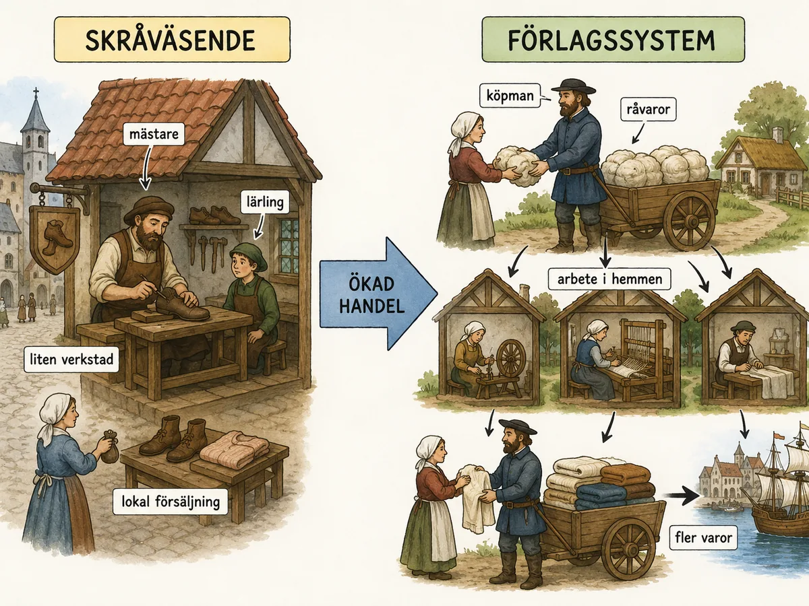
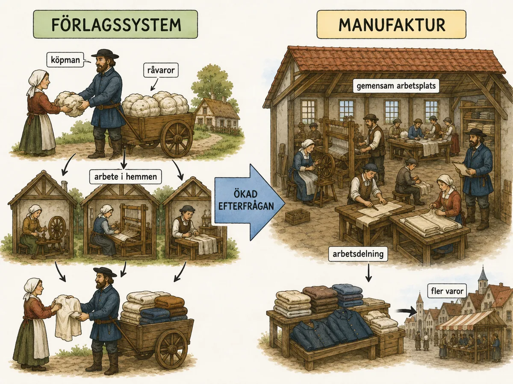
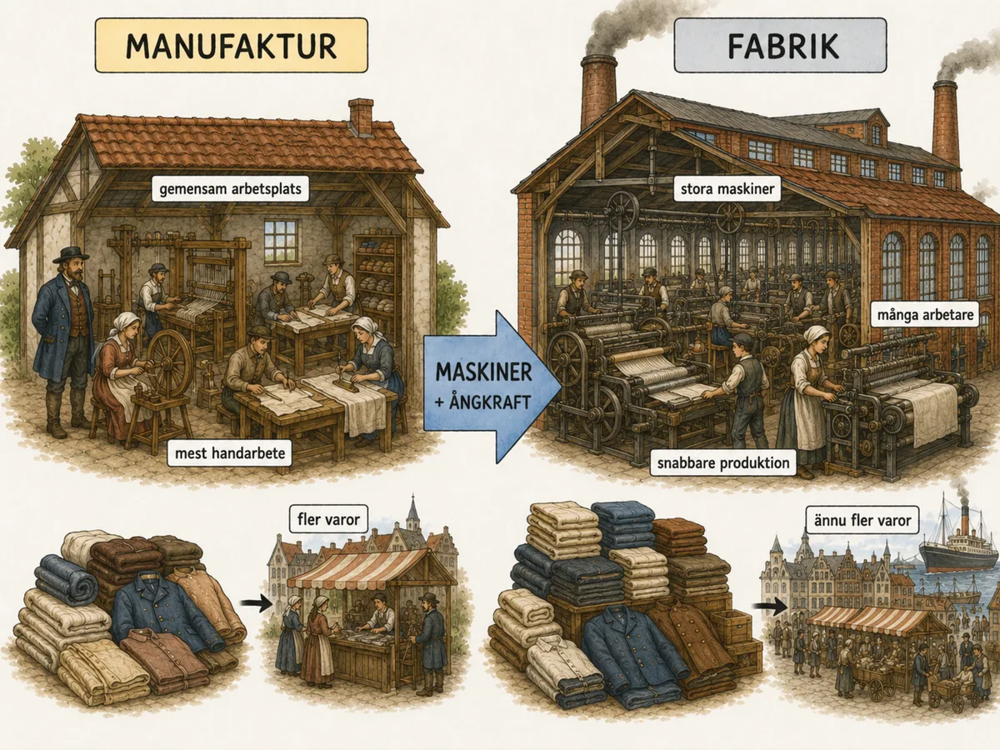

— från skrå och förlagssystem till manufaktur och fabrik —
Den industriella revolutionen handlade om att människor började tillverka varor på ett nytt sätt. Före industrialiseringen gjordes mycket arbete för hand, hemma eller i små verkstäder. Senare började varor tillverkas med maskiner i fabriker. Det skedde i fyra steg.
Den industriella revolutionen handlar om en stor förändring i hur människor tillverkade varor. Före industrialiseringen gjordes mycket för hand, hemma eller i små verkstäder. Under industrialiseringen började allt fler varor i stället tillverkas med maskiner i fabriker.
För att förstå varför fabrikerna växte fram behöver vi titta bakåt. Hur tillverkades saker innan fabrikerna fanns? Det hade funnits flera olika sätt att producera varor, och de förändrades steg för steg. Varje steg skapade nya möjligheter — och nya problem som tvingade fram nästa steg.
Innan fabrikerna fanns tillverkade hantverkare varor för hand i små verkstäder. En smed, skomakare eller skädderare kunde hela arbetet från början till slut. I städerna fanns skråväsendet. Ett skrå var en organisation för hantverkare inom samma yrke. Skråna bestämde vem som fick arbeta och hur utbildningen gick till.
En person började som lärling hos en mästare. Efter flera år kunde man bli gesäll. Om man var mycket skicklig kunde man bli mästare med egen verkstad. Skråväsendet gav bra kvalitet — men gjorde det svårt för nya personer att komma in. Produktionen förändrades därför långsamt.

Före industrialiseringen levde de flesta på landsbygden och arbetade med jordbruk. Men alla saker kunde inte tillverkas hemma. Människor behövde skor, verktyg, tunnor, möbler, kläder. Därför fanns det hantverkare.
I städerna organiserade sig hantverkarna i skrån. Ett skrå var en organisation för hantverkare inom samma yrke. Skråna bestämde vem som fick arbeta med yrket och hur utbildningen skulle gå till. Ofta började man som lärling hos en mästare. Efter flera år kunde man bli gesäll och senare mästare med egen verkstad.
Skråväsendet hade fördelar och nackdelar. Det hjälpte till att hålla hög kvalitet på varorna. Men skråna kunde också bromsa förändring. De skyddade sina egna medlemmar och gjorde det svårt för nya personer att komma in. Produktionen förändrades därför långsamt — vilket passade ett lokalt samhälle men inte ett samhälle där handeln ökade snabbt.
För att förstå varför skråväsendet till slut måste ge vika räcker det inte att veta hur det var uppbyggt — man måste förstå vilken sorts samhälle det hörde hemma i. Skråna var inte bara yrkesorganisationer, utan uttryck för en hel världsbild som historiker kallar den moraliska ekonomin. I den tänkte man sig att ekonomin skulle styras av tradition, rättvisa och gemenskapens bästa — inte i första hand av vinst. Ett pris skulle vara "rättmätigt", en vara skulle hålla måttet, och alla som skötte sig skulle ha sin bärgning. Skrået såg till just detta: det bestämde hur många mästare en stad tålde, vad varorna fick kosta och hur en lärling skulle utbildas.
Den ordningen hade stora förtjänster. Kvaliteten var hög, kunskapen fördes vidare från mästare till lärling, och ingen dränktes av hänsynslös konkurrens. I ett litet, lokalt samhälle där befolkningen växte långsamt och varorna såldes på den egna stadens torg fungerade det utmärkt. Men samma egenskaper som gav trygghet gjorde skrået förändringsobenäget. Genom att begränsa antalet mästare och hålla nya människor ute skyddade det sina egna medlemmar — inte helt olikt en modern kartell. Vägen från lärling till gesäll till mästare var lång, och många gesäller nådde aldrig ända fram: det krävdes pengar, rätt kontakter och en ledig plats i skrået. Systemet var med andra ord byggt för stabilitet, inte för tillväxt. Det var dessutom starkt begränsat på andra sätt: kvinnor stängdes i regel ute från mästarskapet, och en gesäll förväntades ofta vandra mellan städer och länder under några år för att lära av olika mästare innan han ens kunde hoppas på en egen verkstad. Skrået formade alltså inte bara produktionen, utan hela livsloppet för den som ville in i ett yrke.
Här ligger den djupare orsaken till att skråväsendet blev ett problem. Från och med 1500- och 1600-talen ökade handeln, städerna växte och efterfrågan på varor steg snabbare än någonsin. Ett system vars hela syfte var att hålla igen — att bevara kvalitet, priser och ordning — kunde omöjligt svara mot en marknad som skrek efter mer. När en köpman ville få tusen alnar tyg vävda kunde han inte vända sig till ett skrå som med flit begränsade produktionen. Han sökte sig i stället utanför skråets kontroll, ut på landsbygden där reglerna inte gällde — och där föddes förlagssystemet. Skrået blev alltså inte omodernt av sig självt; det blev omkört av krafter det var konstruerat för att bromsa.
Att skråna till slut avvecklades var därför ingen liten teknisk justering, utan en genomgripande förändring av synen på arbete och frihet. I Frankrike avskaffade revolutionen skråna genom Le Chapelier-lagen redan 1791, och i Sverige upphävdes skråtvånget 1846. Bakom besluten låg en ny, liberal idé: att var och en skulle ha rätt att driva vilken näring hen ville — näringsfrihet — utan att en sluten skara bestämde vem som fick delta. Det som en gång varit ett skydd framstod nu som en boja.
Man kan alltså läsa skråväsendets fall som ett tidigt kapitel i en mycket större berättelse: spänningen mellan trygghet och dynamik, mellan ett samhälle som sätter ordning främst och ett som sätter tillväxt främst. Den moraliska ekonomins fråga — ska priser och arbete styras av rättvisa eller av marknaden? — försvann inte när skråna gjorde det. Den återkommer varje gång människor idag diskuterar minimilöner, hyrestak eller om verkligen allt bör vara till salu. Skråväsendet var den gamla världens svar. Industrisamhället skulle ge ett helt annat — och det är den förskjutningen som resten av det här kapitlet handlar om.
Förlagssystemet användes mycket inom textilproduktionen. En köpman — förläggaren — ägde råvaran, till exempel ull. Han lämnade ut den till familjer på landsbygden som spann garn eller vävde tyg hemma. När arbetet var färdigt hämtade köpmannen varan och sålde den vidare. För familjerna gav det extra pengar vid sidan av jordbruket. Men produktionen var fortfarande långsam och det var svårt att kontrollera kvaliteten.

Förlagssystemet var ett annat viktigt sätt att producera varor som växte fram på 1500-talet, framför allt inom textilproduktionen. En förläggare — en köpman — ägde råvaran, till exempel ull. Han lämnade ut ullen till människor på landsbygden. De spann garn eller vävde tyg hemma i sina stugor. När arbetet var färdigt hämtade köpmannen varan och sålde den vidare.
Förlagssystemet gjorde det möjligt att tillverka mer än vad en ensam hantverkare kunde göra. Köpmannen kunde lämna ut arbete till många hushåll samtidigt. För familjer på landsbygden gav arbetet extra pengar vid sidan av jordbruket. Men systemet hade problem: arbetet var utspritt i många hem, och det var svårt att kontrollera hur snabbt människor arbetade och om varorna fick samma kvalitet. Produktionen var dessutom fortfarande beroende av handkraft.
Förlagssystemet brukar framstå som ett mellansteg — något halvfärdigt mellan hantverk och fabrik. Men ser man noga är det här, i böndernas stugor, som något helt nytt i själva verket börjar: den moderna kapitalismens grundläggande uppdelning mellan den som äger och den som arbetar. Historiker kallar därför ibland förlagssystemet för protoindustri — industrialiseringens förstadium.
Varför uppstod det just på landsbygden? Svaret hänger direkt ihop med skråna. I städerna bestämde skråna vem som fick tillverka vad, och de höll medvetet produktionen nere. En köpman som ville producera i stor skala hade allt att vinna på att gå runt dessa regler. På landsbygden fanns gott om människor som redan hade en syssla — jordbruket — men som satt relativt sysslolösa under vinterhalvåret och gärna tjänade en slant extra. Där fanns inga skrån som lade sig i. Köpmannen — förläggaren — behövde bara komma med råvaran.
Och det är den detaljen som är avgörande. Förläggaren ägde ullen, ägde garnet, ägde det färdiga tyget och ägde vinsten när det såldes. Bonden och hans familj ägde bara sitt eget arbete och sina enkla redskap; de fick betalt per producerad enhet och bar ingen risk, men fick inte heller ta del av vinsten. För första gången i stor skala skildes alltså kapitalet — råvaran, pengarna, försäljningen — från arbetet. Vävaren i stugan var inte längre en självständig hantverkare som sålde sin egen vara, utan någon som utförde ett moment åt en annan mans räkning. Just den relationen skulle bli industrisamhällets kärna, och den stora sociala konflikten under hela 1800-talet — mellan dem som äger och dem som arbetar — går att spåra ända hit.
Att det just var textilierna som gick i spetsen var ingen slump. Att spinna garn och väva tyg gick att göra i en enkel stuga med billiga redskap, kräved ingen dyr utrustning och passade därför perfekt för utspritt hemarbete. Därför var det också inom textilproduktionen — särskilt den engelska ull- och senare bomullshanteringen — som förlagssystemet växte sig störst, och det var samma bransch som sedan skulle bli den första att mekaniseras och flytta in i fabriker. Textilierna var med andra ord industrialiseringens spjutspets, hela vägen från stugan till ångdrivna spinnerier.
Systemet hade också sina egna inbyggda problem, och de pekade rakt fram mot nästa steg. När arbetet var utspritt över hundratals hem var det nästan omöjligt att kontrollera. Förläggaren kunde inte se om vävaren arbetade snabbt eller långsamt, om garnet höll jämn kvalitet, eller — ett ständigt bekymmer — om en del av den utlämnade ullen "försvann" på vägen. Takten bestämdes av bönderna själva, som satte skörd och sådd före köpmannens beställningar. Ju större efterfrågan blev, desto mer besvärande blev denna brist på kontroll.
Lösningen låg i en enkel men följdriktig tanke: om man inte kan kontrollera arbetet där det är utspritt, får man samla det. Genom att föra arbetarna till en gemensam lokal kunde förläggaren övervaka tempot, säkra kvaliteten och organisera arbetet effektivare. Där tar manufakturen vid. Förlagssystemet bar alltså på fröet till sin egen upplösning: samma spridda hemarbete som gjorde det smidigt gjorde det till slut otillräckligt.
Det är också värt att lägga märke till vem som utförde arbetet. I förlagssystemet arbetade hela familjen — mannen kanske vävde, hustrun och barnen spann och kardade. Hemmet var arbetsplatsen, och gränsen mellan familjeliv och arbete fanns knappt. När produktionen senare flyttade till manufaktur och fabrik slets denna sammanflätning isär: arbetet lämnade hemmet, och en helt ny sorts vardag tog form. Förlagssystemet var på så vis inte bara ett produktionssätt, utan den sista fasen av en värld där de flesta levde och arbetade på samma plats — något vår egen tid, med distansarbete och hemmakontor, på sitt eget vis närmat sig igen.
Senare växte manufakturer fram. En manufaktur var en större arbetsplats där flera arbetare samlades. Arbetet delades upp — olika personer gjorde olika delar. Det var mer organiserat än förlagssystemet. Men en manufaktur var inte en fabrik. Arbetarna använde fortfarande händerna och enkla verktyg.

När förlagssystemet inte räckte till för att producera tillräckligt med varor, växte manufakturer fram. En manufaktur var en större arbetsplats där flera arbetare samlades för att tillverka varor. Arbetet kunde delas upp — olika personer gjorde olika delar av produktionen. Det gjorde arbetet mer organiserat. Men en manufaktur var inte en fabrik. I manufakturen arbetade människor fortfarande med händerna och enkla verktyg — inte med stora maskiner drivna av ånga.
Om förlagssystemet löste frågan om volym löste manufakturen frågan om organisation — och den lösningen bar på en idé som skulle förändra världen mer än någon enskild maskin: arbetsdelningen. Så länge en hantverkare gjorde hela varan själv, från råvara till färdig produkt, var han begränsad av sin egen hastighet och av hur många moment en enda person kan behärska. Manufakturens innovation var att bryta upp tillverkningen i små delmoment och låta varje arbetare göra ett moment, om och om igen.
Den mest berömda beskrivningen av detta gav nationalekonomen Adam Smith 1776, i boken Nationernas välstånd. Han tog en knappnålstillverkning som exempel. En ensam arbetare som skulle göra hela nålen själv, menade Smith, kanske hann med en handfull nålar om dagen. Men om arbetet delades upp — en drar ut tråden, en rätar den, en klipper, en spetsar, en sätter på huvudet — kunde en liten grupp tillverka tiotusentals nålar dagligen. Samma antal händer, men en enorm ökning i produktion. Arbetsdelningen var alltså inte bara ett sätt att organisera, utan en multiplikator av mänskligt arbete, och den blev en av kapitalismens mäktigaste principer.
Men vinsten hade ett pris, och det är här den djupare analysen kommer in. Hantverkaren i skrået hade behärskat hela sitt yrke — han var en skicklig helhetsmänniska, stolt över en färdig vara han själv skapat. Manufakturarbetaren som hela dagen bara spetsar nålar behöver ingen sådan bred skicklighet; han behöver bara kunna sitt enda handgrepp. Historiker talar om ett avskiljande av yrkeskunnandet: kunskapen flyttas från arbetaren till själva organisationen. Det gör arbetaren lättare att ersätta — och därmed billigare och mer maktlös. Redan i manufakturen anas alltså en av industrisamhällets skavande motsättningar: produktionen blir effektivare samtidigt som arbetet blir mer enformigt och arbetaren mindre självständig.
Att samla arbetarna under ett tak innebar också något nytt som inte hade med maskiner att göra: disciplin. I hemmet hade bonden bestämt sin egen takt. I manufakturen fanns en förman, fasta arbetstider och en ordning att följa. Man kan säga att fabrikens strängaste uppfinning — den övervakade, klockstyrda arbetsdagen — föddes redan här, innan ångmaskinen ens fanns. Arbetaren fick lära sig att komma i tid, arbeta i jämn takt och lyda, en helt annan livsrytm än jordbrukets långsamma säsonger.
Manufakturerna var dessutom ofta en angelägenhet för staten. Under 1600- och 1700-talen, när merkantilismen var den härskande ekonomiska läran, ville furstar att det egna landet skulle tillverka så mycket som möjligt själv i stället för att importera. Därför grundades kungliga manufakturer för sådant som textilier, glas, porslin och vapen — de skulle stärka rikets ekonomi och göra det mer oberoende. I Sverige blev till exempel Norrköping under 1700-talet en av rikets stora manufakturstäder, med ylle- och tygtillverkning som staten aktivt uppmuntrade med bidrag och privilegier. På så vis hängde manufakturen tätt ihop med tidens politik och ekonomiska idéer, något du möter närmare i temat om de ekonomiska faktorerna.
Ändå fanns en gräns som manufakturen aldrig kunde ta sig förbi. Hur skickligt arbetet än delades upp utfördes det fortfarande med människohänder och enkla verktyg. En människa kan bara röra sig så snabbt, orka så länge, vara så stark. För att spränga den gränsen krävdes något som inte tröttnade, inte behövde sova och kunde arbeta i en takt ingen människa mäktade med: maskinen, driven av en kraftkälla större än muskler. Och därmed står vi vid tröskeln till fabriken.
När befolkningen ökade behövdes fler varor. De gamla sätten räckte inte till. Därför blev fabrikssystemet viktigt. I fabriker samlades arbetare, maskiner och råvaror på samma plats. Varor kunde tillverkas snabbare, billigare och i större mängder.
Fabriken blev lösningen när marknaden fortsatte att växa och manufakturen inte räckte till. I fabriken kunde arbetare, maskiner och råvaror samlas på en plats. Produktionen kunde kontrolleras bättre och varor tillverkas i mycket större mängder.
Fabrikerna blev särskilt viktiga när maskinerna blev större och dyrare. En enkel spinnrock kunde användas i ett hem, men stora textilmaskiner behövde mer plats och kraft. Vissa maskiner drevs med vattenkraft och senare med ångmaskiner. Då blev det mer praktiskt att samla dem i fabriker. Och när maskinerna behövde kraft från vattenhjul eller ångmaskiner, byggdes fabriker nära de kraftkällorna.
Man kan därför se utvecklingen som en stegring: skråväsen passade ett lokalt, långsamt samhälle. När handeln ökade växte förlagssystemet fram. När efterfrågan ökade mer behövdes manufakturer. När marknaderna fortsatte att växa — och maskinerna kom — behövdes fabriker.
Fabriken är den punkt där allt det föregående smälter samman och blir något kvalitativt nytt. Skrå, förlag och manufaktur hade alla ändrat hur och var människor arbetade — men i grunden var det fortfarande människohänder som utförde arbetet. Fabriken bröt den urgamla begränsningen genom att låta maskiner göra tunga och snabba moment, drivna av en kraft långt större än muskler: först vattenhjulet, sedan ångan.
Just kraftkällan förklarar varför fabriken måste samla arbetarna, och inte tvärtom. En spinnrock kunde stå i vilken stuga som helst. Men de nya maskinerna — som spinnmaskinerna från slutet av 1700-talet — var stora, dyra och krävde en gemensam drivkraft. Ett vattenhjul eller en ångmaskin kunde inte delas ut till hundra hem; den stod på en plats, och dit fick arbetarna komma. Ett tidigt och berömt exempel är engelsmannen Richard Arkwrights bomullsspinneri i Cromford, byggt 1771 och drivet av vattenkraft — av många räknat som en av världens första riktiga fabriker, där hundratals arbetare för första gången samlades kring maskiner under samma tak och samma arbetstider. När James Watt under 1770-talet förbättrade ångmaskinen så att den blev effektiv nog att driva maskineri, försvann till och med beroendet av strömmande vatten: nu kunde en fabrik ligga nästan var som helst, så länge det fanns stenkol att elda med. Tekniken bestämde alltså geografin — arbetarna samlades kring maskinen och dess kraftkälla, och städer växte fram där fabrikerna låg.
Men fabriken var inte bara en teknisk nyhet, utan framför allt en ny social ordning. I fabriken ägde fabrikören allt som betydde något: byggnaden, maskinerna, råvaran och den färdiga varan. Arbetaren ägde ingenting av detta — bara sin egen arbetskraft, som han sålde timme för timme mot lön. Den uppdelning som börjat anas redan i förlagssystemet var nu fullbordad och total. Det är just detta som gör att fabriken brukar räknas som skiljelinjen mellan industrisamhället och alla tidigare samhällsformer: för första gången levde stora massor av människor helt och hållet på att sälja sitt arbete åt någon som ägde produktionsmedlen.
Med fabriken kom också en ny upplevelse av tid. Bonden och hantverkaren hade följt dagsljuset och årstiderna; arbetet var oregelbundet men självbestämt. Fabriksarbetaren styrdes i stället av klockan och fabriksvisslan. Arbetsdagen var lång — tolv, fjorton timmar var inte ovanligt — och lika för alla, oavsett väder eller säsong. Att passa tiden, hålla takten med maskinen och lyda förmannen blev en helt ny sorts vardag, ofta hård och främmande för människor som nyss lämnat landsbygden. Maskinen väntade inte på någon; människan fick anpassa sig efter den, inte tvärtom.
Härifrån löper trådarna vidare genom hela resten av kapitlet. Fabriken skapade en helt ny samhällsklass: industriarbetarna, som trängdes i de snabbt växande fabriksstäderna. Deras villkor — barnarbete, farliga maskiner, usla bostäder — skulle bli 1800-talets stora sociala fråga och driva fram både de första fabrikslagarna och arbetarrörelsen. Fabriken var alltså inte slutpunkten på en utveckling, utan startpunkten för en ny värld av konflikter och möjligheter som du möter i temana om arbetskraften och konsekvenserna.
Och lägg märke till mönstret som fört oss ända hit. Skråväsendet räckte till ett litet samhälle; ökad handel krävde förlagssystemet; behovet av kontroll krävde manufakturen; jakten på mer krävde fabriken. Varje steg löste det föregående stegets problem — och skapade nya, som tvingade fram nästa. Det är ingen slump, utan en logik, och samma logik driver förändringen än idag: varje ny teknik skapar nya behov, som i sin tur föder nästa teknik. Att förstå den kedjan är att förstå inte bara den industriella revolutionen, utan hur historisk förändring över huvud taget fungerar.
Laddar övningskort…
Laddar frågor ...